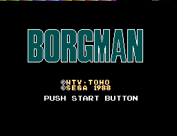
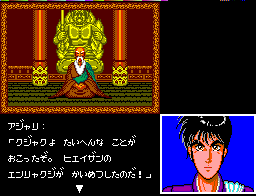

Master System - Jogos baseados em animes
 :::. Por B-Mark
:::. Por B-Mark
Introdução
Como todo videogame de origem
japonesa, o Master System dispõe de jogos baseados em
animes e mangás, como são chamados as histórias em
quadrinhos e os desenhos animados por lá. Os jogos
baseados em animes mais conhecidos por aqui são sem dúvida nenhuma o
Zillion e o Zillion II: Tri - Formation, que foram lançados no ocidente
por que os animes que nasceram de uma pareceria entre a Sega o estúdio
Tatsunoko, com o objetivo de divulgar o Master System no Japão, também
estavam sendo exibidos por aqui.
Muitos acham que o Master System
tinham só estes jogos, mas com a emulação foi possível conhecer outros
jogos baseados em animes para este console. Além de encontrar
jogos baseados em animes desconhecidos por aqui, também temos a surpresa
de alguns jogos serem versões originais de outros lançados por aqui. Temos
como exemplos Black Belt que é a versão alterada do Hokuto no Ken e
Alex Kidd High Tech World que é a versão alterada do Anmitsu Hime.
Todos
os jogos desta lista foram produzidos pela própria Sega porque na época
a Nitendo tinha uma cláusula que impedia as softhouses de produzirem
jogos para seus concorrentes. Além
disso a quantidade de jogos baseados em animes para o Master é
menor do que no Famicom (NES japonês) e outros consoles
produzidos no Japão.
O destino destes jogos
Geralmente estes jogos acabaram restritos ao Japão, já que na época em que foram produzidos eles ainda não tinham sido exportados para outros países, porém alguns foram lançados em certos países em que o anime estava sendo exibido ou tiveram os gráficos e o enredo modificados para lançamento no ocidente. A qualidade destes jogos varia muito, desde o ruim até o excepcional.
Anmistu Hime

Softhouse: Sega
Ano: 1987
Anmitsu
Hime conta a história de uma princesinha chamada Anmitsu que prefere
fazer travessuras do que aprender as boas maneiras imposta pela sua
condição de nobreza. O jogo é um adventure em que a personagem
terá que recolher os pedaços de um mapa para um restaurante, e lutar
contra o tempo e alguns ninjas na floresta. Anmitsu Hime foi modificado e lançado no ocidente como Alex Kidd High Tech World.
Borgman

Softhouse: Sega
Ano: 1988
Borgman
se passa em Megalocity* no ano de 2030 cidade que foi construída para
substituir Tóquio como a capital do Japão, que foi destruída por um
meteorito a 30 anos atrás. Agora a cidade está sendo atacada por
criaturas de outra dimensão conhecidas como Youmas e somente o Borgman
Ryo poderá enfrentá-las.
O jogo Borgman é de ação e lembra um
pouco os jogos do Zillion que também saíram para o Master System e conta
com um mapa 3D do corredor em que você está. Este jogo utiliza dois joysticks, um para controlar o personagem e o outro para acessar o menu de equipamentos. Borgman foi modificado e lançado no ocidente como Cyborg Hunter.
*nota do Giga: a mesma onde ocorre a historia de Masters of Combat
High School Kimengumi
Softhouse: Sega
Ano: 1986
High
School Kimengumi fala sobre as bizarras aventuras de um grupo de
estudantes da escola Kimengumi que começa quando eles estão no 1º grau do colegial e
mais tarde quando estão no 2º grau. O jogo é um adventure que foi lançado originalmente para MSX e depois convertido para o Master System pela Sega. Ele começa com as personagens Yui Kawa e Chi Urui conversando quando aparecem seus colegas e fazem uma careta para elas. Você controla Yui Kawa que anda pela escola. High
School Kimengumi nunca foi lançado no ocidente, mas ganhou uma
tradução em inglês feita por fãs.
Hokuto no Ken
Softhouse: Sega
Ano: 1986
Hokuto
no Ken também é conhecido como Fist of the North Star e conta a
história de Kenshiro, um guerreiro que enfrenta vários inimigos em um
mundo devastado pela guerra. O
anime é famoso por ser pioneiro no gênero de luta nos
animes e mangás e também por seu alto nível de
violência. Neste
jogo você controla Kenshiro e tem que lutar contra vários inimigos comuns
e depois um subchefe, e depois enfrentar os
chefes em uma luta mano-mano nos moldes do Yie Ar Kung Fu, entre eles
Shin (1ª fase ) e Raoh (6ª e última fase), todos com presença no
anime. Hokuto no Ken foi modificado e lançado no ocidente como Black Belt.
Kujaku Ou

Softhouse: Sega
Ano: 1988
Kujaku
Ou conta a história de Kujaku, um misterioso jovem com incríveis
poderes sobrenaturais e que foi criado por sacerdotes, de quem ele
aprendeu que seus poderes deveriam ser usados para o bem na luta contra
demônios. O
jogo mescla adventure e ação e é necessário
o conhecimento da língua japonesa para compreender melhor o game. Kujaku Ou ganhou uma continuação intitulada Kujaku Ou 2: Geneshiro para o Mega Drive. Kujaku Ou foi modificado e lançado no ocidente como Spellcaster.
Tensai Bakabon

Softhouse: Sega
Ano: 1988
Anime
baseado no mangá de Fujio Akatsuka, que também criou o Osomatsu-Kun,
que ganhou um jogo para o Mega Drive, que conta sobre as desventuras do
garoto Bakabon e de seu pai. O
jogo é um adventure onde você controla o pai do
protagonista e é necessário conhecimento em japonês
para jogá-lo. Tensai Bakabon nunca foi lançado no ocidente.
Virtua Fighter Animation
Softhouse: Sega
Ano: 1996
Conhecido como Virtua Fighter Mini no Japão, o jogo é baseado no anime do Virtua Fighter. Virtua
Fighter Animation é um jogo de luta que conta com cut scences entre
as lutas e com o seguinte enredo: Akira Yuki encontra
acidentalmente com Pai Chan, que estava sendo persguida por uma gangue e
acaba tendo que lutar contra ela. Mais adiante ele encontra os outros personagens do jogo. Curiosamente
ele é o único jogo de Master System baseado em anime a ser lançado
exclusivamente no Brasil porque a TecToy portou este jogo que saiu
originalmente para o Game Gear.
Zillion

Softhouse: Sega
Ano: 1987
Anime produzido em parceria entre a Sega e a Tatsunoko com o objetivo de divulgar o Master System no Japão. Zillion
se passa no planeta Maris no ano de 2387 e conta a história de J.J,
Champ e Apple que devem deter os Nozas, invasores de outro planeta. Em
alguns episódios de Zillion são encontradas referências ao Master
System como em um episódio em que J.J estava jogando neste console e às
próprias pistolas dos personagens que são idênticas à Light Phaser. Zillion passou por aqui na Globo-TV Gazeta no final dos anos 80. A Tec Toy trouxe para o Brasil o anime com a intenção de vender a pistola e os jogos para Master System. O
jogo Zillion lembra um pouco o Metroid do NES e nele você controla J.J,
que tem como objetivo invadir uma base Noza e roubar 5 disquetes com
informações secretas, além de salvar Champ e Apple que estão na base. Zillion foi lançado no ocidente com tradução em Inglês.
Zillion II: Tri-Formation
Softhouse: Sega
Ano: 1987
Continuação de Zillion. Jogo de ação que
tem alternadas fases de moto e fases onde o personagem anda a
pé. Aqui você terá que resgatar Champ e Apple
podendo após isto jogar com eles. Entre os chefes temos o
Barão Ricks, arque-inimigo do J.J. Zillion II: Tri-Formation foi
lançado no ocidente com tradução para o
Inglês.
Acesse o Trombone e comente sobre essa matéria!


Um dos erros mais imperdoáveis da Sega. Em 90/91 mais ou menos, a Sega ganhou da Tecmo a oportunidade de fazer umas versões do Ninja Gaiden para os seus consoles. Essa chance é comparável ao que Deus fez quando deu o mundo para Adão... bem, o final tanto de Adão quanto da Sega nesse caso são semelhantes.
Albert Odyssey é um dos jogos mais amados pelos fãs do Saturn. Com uma história simples mas rica, dramatica e emocionante, encantou muita gente que naquele inicio da era 32 bits, ainda não estava acostumada com trilha sonora feita com instrumentos de verdade e gráficos cheios de luz e efeitos. Mas, não era para ser assim com esse jogo...